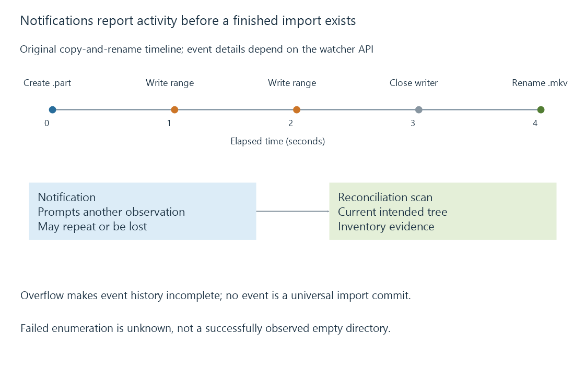

File-system notifications and library reconciliation
File-system notifications report observed changes with platform-specific limits, so a trustworthy library inventory also needs reconciliation.
File-system notifications let software react when files or directories change without repeatedly scanning every entry. Emby's real-time monitoring uses available file-system support to notice additions and changes.
A notification stream is not a complete transaction log. An event says that an observed kind of activity occurred; it does not by itself describe a finished media import or a trustworthy current inventory.
One file can produce several events
A copy may create a file, write many chunks, change metadata and rename the result. Depending on the notification API and workload, software may receive several events, combined events or repeated events for that work.
An original sequence is:
00:00 create Film.part
00:01 write first range
00:02 write another range
00:03 close writer
00:04 rename Film.part to Film.mkv
The first event occurs before the movie is complete. Even a close event has the meaning supplied by its API and producer; it does not universally certify a durable, valid media file. A scanner may need to reopen and analyze the result.

An event queue has limits
Events consume memory and require processing. If a producer outruns the consumer, a bounded queue can overflow. Linux inotify reports queue overflow; .NET FileSystemWatcher documents loss when its internal buffer is exceeded.
An original four-slot queue model receives six separate events before any are consumed. At most four fit, so the remaining events cannot all be retained under that model. The overflow signal tells the consumer that completeness has been lost; it does not recreate the missing details.
Increasing a buffer can help with a particular burst, but it does not turn a finite queue into an unlimited history. Notification scope, filters and processing work also matter.
A remote change may bypass the watcher
Linux inotify observes events generated through the local kernel's file-system activity. It does not generally catch changes made by other machines directly on a network file system.
Another protocol or platform may supply server-side change notifications. SMB change notification, an NFS mount and a local ext4 watch do not all provide identical behavior. “The path is readable” is therefore insufficient evidence that every remote edit will produce the events a monitoring API expects.
Emby's documentation limits real-time monitoring to supported file systems. A server restart after changing that setting is also part of its documented setup. Scheduled or explicit scans remain relevant when the notification path is incomplete.
Reconciliation asks what exists now
A reconciliation scan enumerates the current tree and compares it with the stored library view. That can recover an addition whose notification was lost or combine several events into one current file state.
The observation still needs context. A successful scan of the intended accessible tree can support an inventory update. A failed enumeration, a disconnected share or an uncovered mount-point directory is different evidence.
| Observation | Appropriate interpretation |
|---|---|
| Several events for one path | Recheck the current file; do not assume several independent movies |
| Queue overflow | The event history is incomplete |
| No remote notification | The watch mechanism may not observe that remote activity |
| Successful enumeration of the intended tree | Current inventory evidence |
| Enumeration fails or reaches the wrong tree | Incomplete or misleading inventory evidence |
The implementation may debounce changes, retry analysis or schedule reconciliation. Those are application choices, not guarantees inherent in receiving a file event. The useful model is a notification prompting observation, with scanning restoring current state when event completeness cannot be relied upon.
See Also
- Incremental library scans
- Library scanning and catalogue reconciliation
- Unavailable network mounts and trustworthy library state